Södermalm i tid och rum. Stockholm
Ur Fatburen 3000 år, Sigma Förlag, 1992Havsvik blir insjö
Stockholmsområdet frilades från inlandsisen för ungefär 10 000 år sedan. Då hade jordskorpan varit nedtryckt på grund av isens tyngd. Det betyder att hela Södermalm och östra Svealand varit täckt av vatten under åtskilliga tusentals år medan isen smälte bort och lämnade området. Isälvarna i den tillbakavikande isen svämmade ut slam som sjönk ned i havet och bildade lerlager på botten.
Efter inlandsisens reträtt höjde sig landet så småningom ur havet, och de högsta partierna av Södermalm bildade öar och skär. I nordsydlig riktning sträckte sig Stockholmsåsen, som kommit att sätta sin prägel på topografin i staden. Stockholm var således ytterskärgård för ungefär 4000 år sedan. Strandlinjen låg då ungefär 30 m högre än idag. Fatburssjön var en havsvik av den dåtida Östersjön, som kallas Litorinahavet och var lika salt som Västerhavet.
Växtligheten runt den blivande sjön var beroende av jordmån och topografi. På åsen och bergbranterna runt sjön växte troligen en gles tallskog på de tunna sandiga jordlagren. Inslag kan ha funnits av björk och rönn. Längre ned längs sluttningarna där jordmånen var mer näringsrik och fuktigare, ökadeandelen lövträd, framförallt björk och ek. Men även ädla lövträd som lind och almfanns ganska rikligt. På de sanka markerna längs stränderna dominerade al och vide, tillsammansmed vass, starr och fräken. Hela området runt Fatburssjön, och för övrigt hela Södermalm varskogbeväxt.
| De första vaga spåren av människor vid Fatburssjön kan med hjälp av pollenanalysen spåras tillslutet av bronsåldern. Bland annat har fynd gjorts av groblad, en växt som i historisk tid spridits medmänniskans hjälp i stort sett över hela världen. Till Nordamerika kom den under 1600-talet, och blevdär känd som "den vite mannens fotspår". Människorna runt Fatburssjön ägnade sig förmodligen tidigt åt boskapsskötsel. Förekomst av pollen från enbuskar och svartkämpar, och sporer av örnbräken visar att området utnyttjats som betesmark.Enen är ljuskrävande och gynnas när gläntor öppnas i skogen. Detsamma gäller | 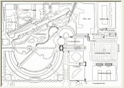 |
{kind=link}
{kind=link}
De första pollenkornen från sädesslag uppträder i jordlager daterade till 800-900-talen. De sädesslag man odlade tycks framför allt ha varit vete och råg. Spåren av odling tyder på en bosättning runt sjön vid denna tid. Sjunkande andel trädpollen visar att skogsarealen samtidigt minskar. Arkeologiska fynd, som visar att människor skulle ha bott på Södermalm under vikingatid, har ännu inte gjorts. Däremot finns vikingatida bosättning på Norrmalm belagd.
Under tidig medeltid (1100- och 1200-talen) sker en ytterligare utglesning av skogsmarkerna runt Fatburssjön med en markant minskning av framförallt björk och tall.Troligen sker en ökad bosättning på Södermalm, vilket kräver utrymme för bebyggelse, och en ökad tillgång på ved som bränsle. Detta bekräftas också i det äldsta skriftliga källmaterialet från år 1288 där det talas om "byn som alldeles nyligen har byggts i detta vårt stift på det område som kallas Södermalm". Betesmarkerna utökades också under denna tid. I tänkeböcker från 1400-talet förekommer sluttningen nordost om Fatburssjön under beteckningen "löten". "Löten" betyder justriklig tillgång på öppen betesmark.
| På den äldsta kända kartan över Stockholm från 1620-talet samt från ett kopparstick av Sigismund von Vogel från 1650 får man en uppfattning om hur Fatburssjöns omgivningar såg ut på1600-talet. Bebyggelsen är framförallt lokaliserad till sluttningarna nordost om sjön. Bosättningarna anges av Hans Hansson (1940) under 1600- och 1700-talen inkludera både herrgårdar med stall och ladugårdar och små hantverksverkstäder. På kopparsticket från 1650 syns endast partierna nordost omsjön, men visar tydligt att trädvegetationen är inskränkt till de högre liggande delarna av åsen. |  |
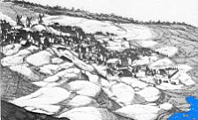  | Pollen från ett stort antal ängsväxter har hittats, vilket kan betyda att runt övriga delar av sjöndominerade äng- och hagmarker, där slåtter och bete kunnat fortgå. Söder om sjön skedde en utdikningav träskmarkerna. Som en parentes kan nämnas att boskapsinnehavet på Södermalm 1627 bestod av 69hästar, 180 kor, 2 kvigor, 88 svin (vuxna) samt 339 ungsvin. Hur många av dessa som nyttjademarkerna runt Fatburssjön är dock obekant. Pollen från flera ogräsarter, till exempelåkerpilört, åkerbinda, jordrök och mållor, har hittats i sjöns bottenlager från denna tid och bekräftar enökad köksodling av bland annat rotfrukter och/eller att marker lagts i träda. |
Bland de odlade växterna uppträder också pollen av korn och havre. Till dessa kulturväxter kan ävenläggas fynd av pollen från bovete, intressant på grund av sin korta historia som odlad art i Västeuropa.Bovetet kom till Europa från östra Asien under vikingatid och fick under medeltiden snabbt storspridning. Denna växt har trots namnet ingen som helst släktskap med vete. Namnet syftar i stället påfruktens bokollonliknande nöt. Bovetets stärkelserika kärnor användes huvudsakligen för framställningav mjöl och gryn. Linne skriver i sin Flora Svecica 1755, att "av fröna kokas i synnerhet i Skåne envälsmakande och kraftig gröt".
En växt som markant ökar under 1700-1800-talen är fläder. Denna buske odlades allmänt, möjligen mestav fattigbefolkningen. Av bären gjorde man saft, sylt och mos. Blomklasarna brukades och användsäven idag till saft och te.
Åren 1840-1880 får industrialismen sitt genombrott i Stockholm. Hyreskaserner växer upp ocharbetarstadsdelar bildas, inte minst på Södermalm. Fatburssjön läggs slutgiltigt igen för att ge plats åtStockholms första järnvägsstation. Vegetationen får därmed allt mindre utrymme, och staden harerövrat ytterligare en bit natur.
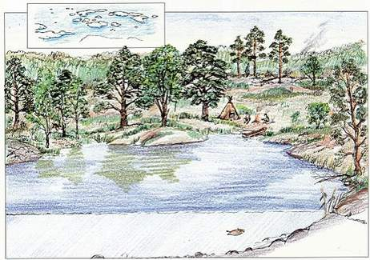 |
Yngre stenålder - bronsålder 3000-1200 f.Kr. Mälarlandskapen var en vidsträckt skärgård. Några större öar hade genom landhöjningen redan förenats tilldet landområde, som så småningom skulle bli Södermalm. Fatburssjön var fortfarande en havsvik i förbindelse med Östersjön. På vikens botten avattes lera och lergyttja. Kiselalgerna i sedimenten vittnar om ganska hög salthalt i vattnet. Runt viken växte skog med rikligt inslag av ädla lövträd såsom ek, lind och alm. Uppe på bergsryggarna trivdes mest tall. Vid denna tid fanns bosättningar i Stockholmstrakten, vilket framkommit genom arkeologiska fynd i bland annat Botkyrka. Vattenlederna runt "Södermalm" var öppna för sjöfart in i Mälaren,som då var en havsvik.För ungefär 3000 år sedan avsnördes viken från havet och övergick till sjö - Fatburssjön. Runt stränderna växte al och på sluttningarna fanns mest lövträd, björk men även lind. |
Sjöns vatten var klart och rikt på lösta salter, vilket fynd av kransalger visar. Där fanns också vitnäckros och olika arter av nate. Fatburssjön påminde vid denna tid om sjöar, som man idag finner i kalkrikaområden till exempel i Stockholms yttre skärgård. Vid sjöns stränder var förutsättningarna goda för att bosättasig, bryta mark och odla. De första spåren av människans närvaro finns registrerade i sjöns gyttjiga bottenlagerfrån denna tid. I Stockholmstrakten visar rikliga lämningar att stora boplatser fanns i bland annat Hallundaunder bronsåldern.
| Yngre järnålder 200 f.Kr - 300 e.Kr. Bosättningen ökar runt Fatburssjöns stränder, mark bryts för odling av säd och för bete. Intill sjöns avlopp harmed människans hjälp den tidigare alsumpskogen till stora delar omvandlats till en fuktig näringsrikstarrslåttermark. Skogen som röjs innehåller nu ytterligare ett trädslag, nämligen gran. Den spreds till Svealandfrån nordost för ungefär 2500-2000 år sedan, det vill säga kring Kristi födelse. Själva Fatburssjön var rik påfisk,som levde på bland annat gäddnate. Gul näckros och hornsärv fanns också bland vattenväxterna. Rikligt medarkeologiska fynd på bland annat Årstafältet visar att en expansion av bebyggelsen ägde rum i Stockholmstrakten. | 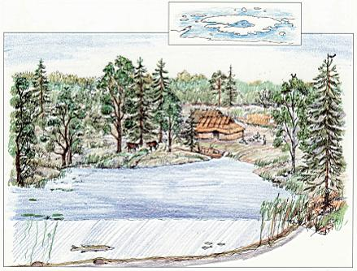 |
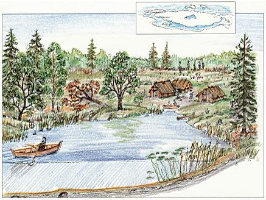 |
Vikingatid 800 - 1000 e.Kr. Ett allt intensivare nyttjande av mark för boskapsskötsel och odling kan tydligt spåras. Pollenfloran innehållerbetesmarksväxter och sädesslag. Skogen höggs ned, främst var ek ett begärligt råmaterial till båtar, bryggoroch andra byggnadsändamål. Att eken brandskattades runt den växande bebyggelsen framgår tydligt avförändringarna i pollenfloran, inte bara i Fatburssjöns bottenlager utan också vid Laduviken norr om Stockholm.I olika delar av centrala Stockholm har vikingatida fynd gjorts, som visar att området var bebott. Götalandsväg, med anor från denna tid, var den äldsta landbundna vägförbindelsen från Stockholm söderut. Vägen löpte troligen i en båge strax öster om Fatburssjön, ungefär längs nuvarande Östgötagatan. |
| 1700-talet Under 1700-talet ökar antalet verksamheter på Södermalm, till exempel i form av bryggerier,slakterier, repslagerier, textilindustrier, tobaksodlingar med mera. Gårdstäppor anläggs ochköksodlingen ökar. Fläder planterades, för att blommor och bär skulle kunna användas till saft ochmos. Sopor från den växande stadsdelen tömdes i Fatburssjön, vilket tydligtavspeglas i form av ett svart bottenlager av gyttja, kol och avfall. Av kiselalgsfloran framgårklart att sjön blev alltmer övergödd. Vissa tider under sommaren kunde sjöns yta vara helt täckt avvattenpilört och andmat. Teckningar av Per Lindroos. |
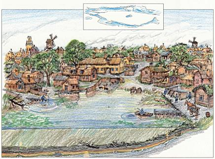 |
av Monica Eriksson
|
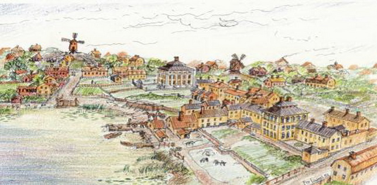  Sjön har börjat växa igen på allvar. Alla försök att reglera stränderna har stannat på papperet. Husen utmed Götgatan har fåttstora trädgårdar på bekostnad av vattnet.På bryggan (som låg där nuvarande Folkungagatan börjar) tvättas kläder, men så rena blev de knappast Strax intill, bakomplanket, ligger en av stadens orenlighetsreservoirer, där man tömde sopor av allehanda slag som senare vidarebefordrades ut isjön.Idag finns nästan ingenting kvar av den lantliga bebyggelsen, bara några stenhus.
Sjön har börjat växa igen på allvar. Alla försök att reglera stränderna har stannat på papperet. Husen utmed Götgatan har fåttstora trädgårdar på bekostnad av vattnet.På bryggan (som låg där nuvarande Folkungagatan börjar) tvättas kläder, men så rena blev de knappast Strax intill, bakomplanket, ligger en av stadens orenlighetsreservoirer, där man tömde sopor av allehanda slag som senare vidarebefordrades ut isjön.Idag finns nästan ingenting kvar av den lantliga bebyggelsen, bara några stenhus. |
Teckning av Per Lindroos.
När FATBURSSJÖN omnämns i skrift första gången, berättas om Peter och HenrikRöde som tillsammans med några arbetskarlar dragit not i sjön. Förutom att de fick betalt för sittarbete och för fisken, berättas om en man som rodde ut till fiskelaget med öl: "fem öre för öll Olaf Slwtfördhe wt pa fataburin, som de drukko". Om detta fiskafänge, som inträffade 1440, står att läsa i stadensäldsta räkenskapsböcker. Fatburssjön var då ett stort, friskt och fiskrikt vatten. Efter fisketåtervände männen hem till staden innanför murarna - nuvarande Gamla stan. På medeltiden bodde inte många på Åsön, som Söder kallades. Stadens borgare använde området till bete åt sinboskap och för odling. Först på 1500-talet börjar staden långsamt växa ut på malmen och för dessamänniskor blev sjön en viktig tillgång. Under århundradenas gång blev dock sjön så illa behandlad,att när man på 1850-talet fyllde igen det som då var kvar av sjön, var det ett litet, smutsigt och dött vatten. Det stora kvadratiska huset i mitten är Lillienhoffska palatset. Idag ser det litet ut i förhållande till omgivningen, där det ligger vid Götgatan på Medborgarplatsens norra sida.I kvarteret söder härom låg familjen Paulis malmgård med färgeri, väveri och arbetarboståder. Numera finns bara delar av denna egendom kvar, dolda bakom stängsel och senare tiders bebyggelse. |
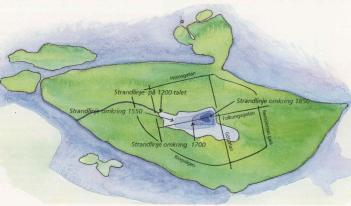  Bofills båge ligger ungefär där Fatburssjöns mittpunkt låg för 800 år sedan. Där Maria Bangata idag möterRosenlundsgatan hade sjön sitt utlopp. Bofills båge ligger ungefär där Fatburssjöns mittpunkt låg för 800 år sedan. Där Maria Bangata idag möterRosenlundsgatan hade sjön sitt utlopp. | Att sjön grundades upp berodde på flera saker men främst på att man under 1600-taletströp det naturliga utflödet mot Årstaviken och ersatte det med ett konstgjort via det så kalladeStadens dike söder om sjön. Under detta århundrade dikades även stora områden ut för att ge platsåt de stora raka gatorna och de regelbundna kvarteren som stadsplaneregleringen föreskrev. Blandannat fick Götgatan, Söders huvudgata, sin nuvarande sträckning på 1650-talet, och längs meddenna växte nu staden ut på malmen. De tidigare så glest bebodda trakterna kring Fatburssjön blevnu snabbt befolkade och det var dessa inflyttade söderbor som bidrog till sjöns fortsattauppgrundning. Generationer av södermalmsbor tippade här avfall både från sina hushåll och frånandra verksamheter i sjöns närhet. |
Denna hantering ledde så småningom till vad vi idag skullebetrakta som en miljökatastrof, där många människor kom att dö av det förorenade vattnet. Soporna,som bildade ett växande bälte utefter sjöns stränder, ligger idag djupt under våra fötter.Redan på 1930-talet, när man schaktade för att ge plats åt Medborgarhuset, hittadestadsmuseets arkeologer rester av avfallslager i den forna strandkanten. Under 1980-talet, då de nyabostäderna vuxit upp på Södra stationsområdet, har dessa lager vid flera tillfällen kommit i dagen.Bland det en gång så illaluktande avfallet där latrin, hushållssopor, slakteriavfall och hantverksresterblandats har det mesta brutits ner till hårt sammanpackad jord där de mera beständiga skärvornaav glas och porslin, lergods och kakel ligger utströdda.
Bryggan vid Paulis Mera om Paulis malmgård
| Där Folkungagatan idag mynnar ut i Södra stationsområdet, låg en av bryggorna ut i Fatburssjön. Bryggan hittades 1938, tre meter under gatan, när grävmaskinerna skulle beredaplats för Medborgarhuset. I fyllnadslagren kring bryggan hittades föremål som slängts ellertappats i sjön. På en karta från 1739 syns bryggan i slutet av en liten gata, dåbenämnd "tvärgränden till siön". Kartan berättar också att tomten intill ägdes av handelsmännen Johan och Niklas Pauli. De två bröderna var tredje generationen Pauli som boddehär och drev det ylleväveri och färgeri som farfadern anlagt nere vid stranden.Det fina stenhuset som familjen lät bygga åt sig ligger fortfarande kvar och ingår idag ikatolska kyrkans egendom. "Flugmötet" vid norra stranden På en karta från 1764 ser vi Paulis tomt och den ovan omtalade bryggan som nu,knappt 30 år senare, tycks ligga mer på land än ute i vattnet. Med Herr Pauli avses nu nämndeNiclas sedan brodern Johan kommit på obestånd och lämnat familjeföretaget. Norr om Paulis boddeslaktare Djurberg och invid hans tomt stod ett fyrkantigt hus benämnt folkelig reservoir, där folktömde sina sopor och andra orenligheter. Från Högbergsgatan, som en fortsättning söderut på nuvarande Skaraborgsgatan, går idag en närmast obefintlig gata, nämnd Banbrinken. Den leder nermot det lilla banvaktshuset, som ännu finns kvar, helt nära den plats där det första stationshuset låg. | 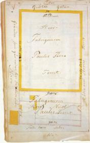  Tomtkarta 1762. Genom den planerade utfyllnaden i det pålade strandområdet kunde familjen Pauli utökasina domäner. De byggnader som syns tillhör det väveri som "fabriqueuren Nicol. Pauli" innehade. Längsmed tomtens norra sida, som är till vänster i bilden, börjar nuvarande Folkungagatans sträckning. Härkallas den "Gränden som går ner till Fatburs Siön" och avslutas i samma brygga som på tomtkartan från 1739. F.d. Stadsingeniörskontorets kartor. A1d. Volym Fria 8 s. 79.1 stadsarkivets samlingar. Tomtkarta 1762. Genom den planerade utfyllnaden i det pålade strandområdet kunde familjen Pauli utökasina domäner. De byggnader som syns tillhör det väveri som "fabriqueuren Nicol. Pauli" innehade. Längsmed tomtens norra sida, som är till vänster i bilden, börjar nuvarande Folkungagatans sträckning. Härkallas den "Gränden som går ner till Fatburs Siön" och avslutas i samma brygga som på tomtkartan från 1739. F.d. Stadsingeniörskontorets kartor. A1d. Volym Fria 8 s. 79.1 stadsarkivets samlingar. |
{kind=link}
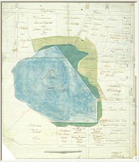  1764 1764 |
På kartan från 1764 är vägen utritad som en gränd ner mot sjön, mellan Inspector Malmbergs ooch Herr Sekreterare Forstomter. Sjöstranden är markerad som dyiga områden i olika gröna nyanser. På andra kartor från sammatid vet vi att även här funnits en reservoir för sopor eller ett flugmöte, som det hette i folkmun. Av demetertjocka fyllnadslager som grävts fram här i slutet av 1980-talet, framgår att Fatbursstranden varsom en jättestor sophink vid 1700-talets slut. I dessa lager ligger skärvor av enkla vardagsföremål. Dehar kastats bort när de gått sönder eller tjänat ut. Föremål som just därför att de använts dagligen inte bevarats hela till eftervärlden som de praktföremål som man aktat så väl att de idag är dyrbara antikviteter. Det växande sopberget Av kvartärgeologernas analyser av sjöbottnen vet vi att människor bott kring Fatburssjön sedanförhistorisk tid. Om man genomsökte hela den gamla sjöns innehåll så skulle man hitta tappade ochkastade föremål frånalla tider och in på 1800-talet. Att just 1700-talsföremålen är så väl representerade är ingen tillfällighet.Under detta sekel pågick nämligen en mer eller mindre medveten utfyllnad av sjön. Tidigare hade manförsökt rensa sjön från orenligheter, men efterhand blev detta allt svårare och den blev istället enavstjälpningsplats utan motstycke. |
På en tomtkarta från 1762 (ovan) över Nicolas Paulis egendom ser vi pålrader i Fatburssjönsstrandkant. De var avsedda för att ge stadga åt de fyllnadsmassor man avsåg att dumpa här. Denandra kartan, från 1764 , visar med sitt förslag att få bort de sumpiga stränderna attman haft utfyllnaden i åtanke. Den ständigt växande stadenhade svårt att ta hand om sitt avfall och en begynnande massproduktion av varor bidrog till attförvärra situationen.Lergods, fajans, flintgods, porslin och kritpipor är förbrukningsvaror med begränsad livslängd. Utomporslinet tillverkades allt på 1700-talet inom landet. I Stockholm anlades bland annat fajansfabriker,pipbruk, glasbruk och textilmanufakturer på malmarna.
En liten insjö eller stor puss
Monica Eriksson
Stockholms Stadsmuseum
"Fateburs-Sjön, en liten Insjö eller stor Puss, belägen i sjelfva dälden på Södermalm, som sträcker sig ifrånöster till väster, emellan Högsbergs- och Göthgatan, och omgifven på 2:ne sidor af Fatebursholmen, äger envidd af ungefärligen 3 à 4000 alnar. Til denne lilla Insjö, som visserligen underhålles af någon underjordiskrännil, flyta flere trummor och rännstenar, hvilka, i synnerhet Sommartiden, öka det stillastående vattnetsobehagelige luckt, då det kommer i rörelse."
SÅ PRESENTERAs FATBUREN 1785 i fattigläkaren Daniel Wickmans "Berättelse om dödligheten omkringFateburs-Sjön på Södermalm".
Den extremt höga dödligheten i Stockholm vid denna tid var ett stort bekymmer. Samma år somWickman skrev sin redogörelse om dödligheten vid Fatburssjön höll J.L. Odhelius, assessor iCollegium Medicum och läkare vid Serafimerlasarettet, ett tal i Vetenskapsakademien över ämnet"Dödligheten i Stockholm". Hos Odhelius möter vi för första gången förslaget att Fatburssjön börfyllas igen.
Men Fatburen har en lång historia innan den på 1700-talet blivit ett illaluktande träsk som manhelst ville bli av med.Egendomligt nog finns så vitt man vet ingen bild av sjön, med undantag av ett kopparstick från1650-talet, ett stort panorama över Stockholm av Sigismund von Vogel, där en liten vik av sjön,omgiven av ett spinkigt staket, händelsevis kommit med.
En sjö i stadens utkant
I äldsta tider var Fatburen en vik av Saltsjön. Genom landhöjningen snördes den av från havetoch blev senare en insjö med utlopp i Årstaviken. På de äldsta Stockholmskartorna, från förradelen av 1600-talet, är sjön betydligt större än under århundradet före järnvägens tillkomst. Manbrukar markera sankmarker runt sjöns södra delar.
Sjöns namn - fatbur eller fatabur betyder förrådshus, visthusbod - syftar säkert på det som gavden dess största betydelse i äldre tider: rikedomen på fisk. Staden hade fiskerätten i sjön redan på1400-talet och behöll den ett stycke in på 1600-talet, även om denna rätt långt ifrån alltidrespekterades.
Sjön var också uppskattad för sitt rena och friska vatten. En särskilt värdefull källa fanns på dentomt som Niklas Pauli förvärvade på 1670-talet och som senare kom att ägas av katolskaförsamlingen. Källan gav friskt vatten till Fatburen. 1654 föreslogs rent av att man skulle dra envattenledning från sjön till Kungliga slottet. Sjön låg ju högt, så förslaget var helt genomförbart.Men det utfördes aldrig.
Alldeles öster om sjön gick den landsväg som var utfartsvägen söderut från Stockholm. Vägenbörjade utanför Söderport (vid nuvarande Södermalmstorg), ledde uppför backarna och följdeRepslagargatan, fortsatte därefter österut längs Högbergsgatan och så mot söder i en vid sväng längsFatburens östra strand.
Nära vägen låg den kulle som kallas Pelarbacken. På Pelarbacken avrättades 1306 riksrådet ochmarsken Torkel Knutsson. Rimkrönikan berättar att detta skedde söder om staden där "Bysens fää"gick. Vid hans grav upprestes ett altare och ett stort kors, som länge fungerade som vägmärke förresande. I närheten byggdes senare ett litet kapell, Helga Kors kapell. I slutet av medeltiden användeskullen som slutstation för en korsvägsvandring, en via dolorosa, som skulle efterbilda den väg Jesusgick från Pilatus' hus i Jerusalem till Golgata. Pelarbacken var Stockholms Golgata eller kalvarieberg,och här upprestes tre stenar, som kallades pelare, med scener ur passionshistorien. En av dessa stenar finnsbevarad. Den är nu uppställd på Stockholms medeltidsmuseum.
Under tidernas lopp grundades Fatburen upp och blev allt mindre. Sjön hade mycket grundastränder, så till en del skedde detta på naturligt sätt. Ett stort ingrepp på 1600-talet hade en förödandeeffekt på sjön.
Kring Fatburen på 1600-talet
Ny stadsplan och ny kyrka
Stockholm fick under förra delen av 1600-talet sin första stadsplan under ledning av Mas Fleming,vår förste överståthållare. På 1640-talet hade turen kommit till Söder. Götgatan, den nyautfartsvägen, skulle nu dras rakt söderut och inte längre i en båge kring sjö och sumpmarker.Därför dikade man ut och torrlade den vik av Fatburen som låg i vägen och kunde så dra fram enrak gata.Gatunätet däromkring drogs också upp med raka gator.
Sumpmarkerna öster om den nya utfartsvägen avvattnades genom ett litet kanalsystem sydost omsjön. Det fortsatte i Stora stadsdiket, Fatburens ursprungliga utlopp, som nu kom att gå ett styckesöder om sjön. Sjöns vattennivå sänktes, och den förlorade sitt direkta avlopp och sin naturligagenomströmning, något som kraftigt bidrog till att den snart började växa igen.
Så länge staden hade fiskerätten i Fatburen var bebyggelsen kring sjön inte omfattande. Nu blevdet annorlunda. Stadsplaneregleringen på 1640-talet åstadkom att byggnadsverksamheten på Södersatte fart. Folkmängden i Stockholm ökade enormt vid denna tid, på trettio år femdubbladesinvånarantalet.Vid mitten av 1600-talet delades Söder i två församlingar, Maria och Katarina. Hittills hade Mariaförsamling omfattat hela Söder. På den plats där Maria kyrka ligger har det funnits kyrka eller kapellsedan 1300-talets senare del. Omkring 1350 lät Magnus Eriksson där anlägga S:ta Maria Magdalena kapell. Detta revs,enligt beslut på Västerås riksdag 1527, av strategiska, ej religiösa skäl: Gustav Vasa ville inte hanågra stenbyggnader på stadens malmar, eftersom sådana kunde användas som befästningar vid anfallmot Stockholm.
1576 tog Johan III itu med att låta uppföra en ny Maria kyrka. Bygget påbörjades i slutet av1580-talet men avstannade i och med kungens död 1592. Först på 1620-talet kom arbetet igång igen,på initiativ av Gustaf II Adolf. 1634 var kyrkan klar. Den restaurerades och byggdes om 1672-81efter ritningar av Nicodemus Tessin d.ä. och fick då en ny stilig tornspira. Denna förstördesfullständigt vid den stora Mariabranden 1759. Kyrkans torn hade därefter länge ett egendomligtstympat utseende. Först 1825 uppsattes den nuvarande tornhuven.
En föregångare till Katarina kyrka var det lilla Sturekapellet, uppfört 1587-1590 på initiativ avJohan III, på den plats där offren för Stockholms blodbad, jämte stoftet efter Sten Sture d.y. ochhans lille son, hade bränts av kung Kristian 1520.Karl X Gustav tog initiativet till kyrkbygget och församlingsdelningen. 1654 delades Söder i tvåförsamlingar. Sture-kapellet revs, och på dess plats började man 1656 uppföraen stor och ståtlig barockkyrka, vars arkitekt var Jean de la Vallee. Kyrkan uppkallades efterKatarina av Pfalz, Karl X Gustavs mor. Kyrkbygget tog lång tid, först 1690 var Katarina kyrkafärdigbyggd.
Gränsen mellan de båda Söderförsamlingarna fastställdes noggrant. Den skulle följa Götgatan frånMälaren söderut till Högbergsgatan, sedan följa Högbergsgatan västerut, omfatta kvarteret Nederlandoch därefter gå tvärs över Fatburen. Kvarteren Holmen och Bryggaren på sjöns södra strand skulle höratill Katarina församling.
Gårdarna runt sjön
Bland tomtägarna vid sjöns stränder fanns vitt skilda samhällsklasser representerade. Här fannssamma egenartade blandning av de rikas eleganta malmgårdar och de fattigas enkla träskjul somman brukade möta i stadens utkanter. Uppe på kullarna stod väderkvarnar. Stadens repslagarbanafanns här sedan medeltiden.
Man finner kända namn bland tomtägarna. Anders Düben, kapellmästare och organist vid TyskaKyrkan, hade en tomt i kvarteret Nederland. I samma kvarter bodde den förmögne Joachim PötterLillienhoff, som låtit uppföra det ståtliga privatpalats som fortfarande finns kvar. Vid sjöns södrastrand ägde postmästare Johan von Beijers arvingar tomter som den förmögne handelsmannen NiclasPauli senare förvärvade. Långt senare kom de att tillhöra katolska församlingen.
Det är litet överraskande att man redan på en av kartorna i stadsingenjör Johan Holms tomtbok överöstra Södermalm för 1674 finner benämningen "Fateburs-träsket". Det kan man läsa nedanför kvarteret"Dy Tiäret det Andra" - annars heter det alltid Fatburssjön. Det måste vara en tidig iakttagelse av vadsom snart skulle komma. Redan på den tid då Holms tomtbok upprättades hade frågan om sjönsrensning faktiskt varit uppe till diskussion i magistraten. Fångar från tukthuset skickades ut på pråmar isjön för att rensa den. Men någon större effekt blev det inte.
1700-talets Fatbur: Fabriker och fattighus Under förra hälften av 1700-talet förändrades befolkningssammansättningen på Söder. Många småfabriker av olika slag anlades här, och arbetarna bosatte sig i närheten. Fint folk sökte sig åt andrahåll. Palats och malmgårdar fick oftast en annan användning än den ursprungliga. Lillienhoffskahuset blev 1745 fattighus. |
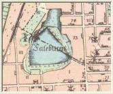  |
Trakten kring Fatburen påverkades av att den förr så fina sjön hastigt hade förvandlats till ett osuntoch illaluktande träsk. Till detta bidrog att invånare och fabriker stjälpte sopor och annat avskräde ivattnet. Kring Fatburen fanns textilindustrier, bryggerier, slakteri och orenlighetsreservoirer.Planerade väl behövliga regleringar och upprensningar av sjön stannade på pappret.
Doktor Wickman berättar
Doktor Daniel Wickman, som 1785 skrev "Berättelse om dödligheten omkring Fateburssjön påSödermalm", som redan citerats, var fattigläkare på Söder några år och bodde nära sjön.Wickman berättar att det är något mystiskt med Fatburen, den har flera bottnar.
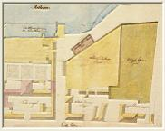  Fatburens vatten försämras markant under 1700-talet. Förklaringen har vi i den bruna orenlighetsreservoar som på en detaljritning från omkring 1770 syns gränsa till slaktaren Diurbergs egendom. Detta flugmöte på sjöns östra strand vid Rådmansgatans - nuvarande Folkungagatans - mynning blev dödsstöten mot både sjön och många människor som föll offer för vattenburna infektioner. Kartan är signerad av Carlberg 1766. Fatburens vatten försämras markant under 1700-talet. Förklaringen har vi i den bruna orenlighetsreservoar som på en detaljritning från omkring 1770 syns gränsa till slaktaren Diurbergs egendom. Detta flugmöte på sjöns östra strand vid Rådmansgatans - nuvarande Folkungagatans - mynning blev dödsstöten mot både sjön och många människor som föll offer för vattenburna infektioner. Kartan är signerad av Carlberg 1766. | "At den äger en ellerflere dybottnar vet jag med visshet; ty då framledne Åldermannen Djurberg, som den tiden bodde på Göthgatan uti husetN:o 10, och dess grannar erhöllo vid 1770 års Riksdag rättighet, at - - - intaga en liten Ängsrimsa emellan berörde Insjöoch deras trädgårdar --- beslöt bemälde Ålderman at med Staquet instänga den delen däraf, som honom tillhörde. Sedanpålar af 14 eller 15 alnars längd voro uti sjöbotten nedslagne, tycktes en af dem ej vara så fast och djupt nedtryckt somde andre, hvarföre Åldermannen befalte arbetarne at med kranbulten gifva denna pålen ännu ett slag. Efter et enda slagblef pålen med hast osynlig, och dess öfversta ända - - - kunde ej kännas under isen med en stång af sex alnars längd. " Såvitt Wickman vet finns ingen fisk i sjön,bara ödlor och grodor, skalbaggar, sländor och olika vatteninsekter.Han beskriver också växtlivet: |
"Då denna Insjö vid Vår- och Höst-tiden af den smälte snöen och aftrummors och ränstenars starkare tilflytande stiger, rinner vattnet uti en Canal - - - til Sinkens Damm. ---Åtskillige växter framkomma sedermera, efter det öfverstigande vattnets aflopp, omkring dess gyttjefulla stränder"...
Längre fram på sommaren är sjön övervuxen och liknar mest "en blomsterrik Äng ".Det låter idylliskt, men så var inte fallet:
"Vid infallande storm då - - - vattnet af blåsvädret upröres,upstiger den obehageligaste stank, som, jämte reservoirerne vid huset N.o 41 på Timmermansgatan, vid huset N.o146 på Högbergsgatan och vid huset N:o 10 på Göthgatan - - - förgifta luften och sedermera har jag --- försportibland fattigt folk, som bo omkring stränderna af denne Insjö, Synochus putrida, Dysenterie, och - - - deenvisaste quartaner, som ej vika för något medel. --- Af förstnämnde sjukdom dogo 4 personer år 1782 uti gårdenNo 146 vid Högbergsgatan, hvarest den stora och med as upfylte reservoiren är belägen, oaktadt de kraftigastemedel mot anförde sjukdom blefvo nyttjade. Fråssor och Rödsot hafva i synnerhet visat sig ibland arbetarne---som bo uti den nederst på Fatebursgatan vid sjökanten belägee Träbyggningen, där den af Ständerne utdömdereservoiren nu dageligen tilltager. "
Ett stinkande träsk
Samma år som Wickman skriver om dödligheten kring Fatburssjön håller J.L. Odhelius sitt tal iVetenskapsakademien om "Dödligheten i Stockholm". Osunda miljöer, som bidrog till den högadödligheten, fanns på många håll i staden:
"Väl är det sant- -- at på Södermalm finnes den så kalladeFateburs-sjön, som är et stinkande träsk, fylt af stillastående ruttet vatn ---".Odhelius fortsätter: "På Södermalm blir ganska angeläget att uttorka eller igenfylla FatebursSjön. ---Huru och på hvadsätt detta träskets fyllning må ske undfaller vist icke Stadens uplyste Styresmän; de närliggande sandbergen synes gifva ett ganska tjenligt och minst kostsamt ämne; men som det torde draga långt ut på tiden, är oundvikeligt atnågra därinvid gjorda samlingsställen för stinckande ämnen, hvari folket kasta döda hundar och kattor medannan osnygghet, må genast förstöras, om de olyckeligaste fölgder för hälsan skola kunna förekommas. "
Att Fatburen med omgivningar betraktades som ett förlorat område framgår klart av deuppgifter som finns om sjön under början av 1800-talet, till exempel hos Elers (1801):
"Södermalmär högländt, hafver nu mera, breda gator, rymliga tomter, stora och vackra trädgårdar; husen äro icke öfvermåttanhöga, och Malmen äger försvarligt godt vatten innom sig samt rundt omkring. Härvid bör dock anmärkas, att denså kallade Fateburs sjön, som är ett stinkande träsk, gjör trackten närmast deromkring ganska osund, hvarföredess igenfyllande blifvit tilstyrkt, på det denna malmens förmånliga och hälsosamma belägenhet i öfvrigt, måtteökas och befrämjas. "
Sundhetstillståndet kring Fatburen
1827 författade P.G. Cederschiöld ett memorial till Svenska Läkaresällskapet: "Om Sundhetstillståndet i Stockholm och Medlen till dessförbättrande". Han misstänker att den osunda luften och det förorenade vattnet bidrar till denhöga dödligheten i Stockholm:
"Luften, på hvars renhet helsa och lif så wäsendtligen bero, är alltför mycket uppblandad med osunda ångor,icke blott från de stora, genom fyllning med gödsel och allt annat slags orenlighet, tillkonstlade träsken, såsomClara-sjön, Fatburs-sjön, Nybro-wiken och den derifrån till Brunnswiken fordom farbara, men nu till ett stinkandedike förwandlade kanalen... Wattnet, som utgör en så wäsendtlig beståndsdel icke blott af allt, som kan tjena menniskan till föda ochdryck, utan äfwen sjelfwa menniskokroppen, och på hwars förhållanden följaktligen helsa och lif så mycket bero,är--- i Fatburssjön föga bättre än giftigt. Luften bör hållas ren. - - - Emedan derföre de skadliga tillblandningarne allmännast utgöras af utdunstningarifrån träsk och ruttnande afskräden samt all slags orenlighet; så borde- --Fatburssjön upprensas, eller kan hända helst alldeles bortskaffas; --- Fatburssjön borde, såframt han förwattentillgång wid eldswådor kan umbäras, helst uttappas eller igenfyllas: eller, i annat fall åtminstoneupprensas. "
Fatbursminnen från 1800-talet
Ändå kunde den osunda trakten kring Fatburen vara till glädje för många stockholmare. Claes Lundin berättar i sina memoarer, "Engammal stockholmares minnen", om anspråkslösa fritidsnöjen. På Söder fanns mångaträdgårdar där man kunde promenera, plocka bär eller glädja sig åt blomsterprakten. En avdessa var den Rosenbladska trädgården, som "var belägen vid Götgatan, där katolska församlingen nuhar ett stort hus och S:t Eriks kyrka. Trädgården sträckte sig ned till Fatburssjön, som redan på 1830-talet varett osundt träsk, hvilket dock ej hindrade att man från trädgården gjorde utflykter på sjön eller på 'Dödahafvet', som vattnet ofta benämndes, samt att musik där uppfördes från två 'kascherade' orkestrar. Så vartillfället åtminstone under sommaren 1835, då den blott ett par år gamla Svenska trädgårdsföreningen hade enutställning i Rosenbladska trädgården, hvilken väckte uppmärksamhet med orangeri och en byst af Linné. Vidutställningen infann sig mycket folk."
|
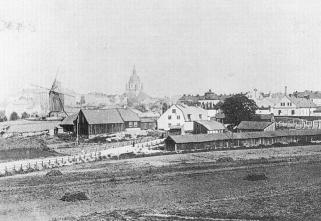  Utsikt från sydväst över området söder om Södra Bantorget och den utfyllda Fatburssjön. Till vänster i bakgrunden Lillienhoffska huset och kvarnen Fatburan. Från 1870-talets början.
Utsikt från sydväst över området söder om Södra Bantorget och den utfyllda Fatburssjön. Till vänster i bakgrunden Lillienhoffska huset och kvarnen Fatburan. Från 1870-talets början. |
O.A. Stridsberg kan också berätta, i "En gammal stockholmares hågkomster från stad ochskola", hur det såg ut här innan järnvägen kom: "Fatburssjön på Södermalm har försvunnit. Där åktehela denna stadsdels ungdom skridskor, pojkarne nämligen. ---Fatburssjön var ett djupt träsk med ett brettbälte af vass. Den stora Rosenbladska egendomen, nu tilhörig den katolska församlingen, gick med sinträdgård ner till vattnet. Äfven denna ytterligt prosaiska vattensamling hade sin mystik: den sades hafva tvåbottnar. Nu är den fylld, och den södra järnvägsstationen upptager en del af dess forna område. Sinkens dammär äfven borta." |
Katolska församlingen Mera om den katolska församlingen
| I slutet av 1850-talet, alldeles innan Fatburens saga var all, inköpte katolska församlingen iStockholm tomter på södra stranden av sjön och blev ägare till den Pauliska malmgården, där maninrättade skola, kapell, församlingslokaler och biskopsbostad. S:t Eriks katolska kyrka uppfördessenare, i början av 1890-talet. På andra sidan sjön uppfördes på 1870-talet två byggnader medanknytning till den katolska församlingen, Oscar I:s minne vid Björngårdsgatan ochJosefinahemmet i hörnet Högbergsgatan/Björngårdsgatan, båda på initiativ av änkedrottningJosefina, Oscar I:s gemål. Men innan dessa byggnader var färdiga hade mycket hänt medFatburssjön. Sjön gick sitt slutliga öde till mötes på grund av en händelse som inte hade något med hälsovårdenatt göra.Vid mitten av 1800-talet hade järnvägsepoken kommit. Vid 1853-54 års riksdag beslutades attstaten skulle bygga stambanor genom landet.1856 föreslogs att Stockholm skulle få två järnvägsstationer, en på Norr och en på Söder. Chefen för statens järnvägsbyggnader, Nils Ericson, förespråkade en sammanbindningsbanagenom Stockholm, men vann inte gehör för iden. Han ansåg att norra stranden av sjön Fatburen varen lämplig plats för den första stationen. Därifrån skulle man kunna spränga en tunnel genom södrabergen för att dra järnvägen in till centrala staden. | 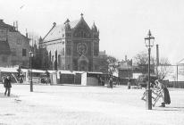  Södra bantorget mot sydväst med Katolska kyrkan S:t Erik. Omkr 1900 Södra bantorget mot sydväst med Katolska kyrkan S:t Erik. Omkr 1900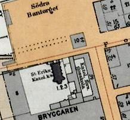 |
Sjön fylls igen för Södra station
1858 beslöts att staden kostnadsfritt skulle överlåta tillstaten all den mark som behövdes för bangårdsanläggningen samt för järnvägens sträckning därifråntill Årstaviken.Anläggandet av Södra station var ett synnerligen komplicerat företag. Banan drogs över denigenfyllda Fatburssjön. Man måste göra en tät och omsorgsfull pålning i den sanka och vattensjukamarken. Genom ständig pumpning lyckades man hålla platsen där arbetet utfördes fri från vatten.
1860 kunde det första lokomotivet, "Stockholm", gå över en järnvägsbank vid Liljeholmen och därefter längs Maria bangata till bangården intill Fatburssjön, som nu var nästan heltförsvunnen. Årstabanken användes till 1929 då Årstabron var klar.I en rapport från Nils Ericson 1860 kan man läsa:
" Wid juni månads utgång war grunden tillstationshuset färdig--- . Sedan omkring 1 400 kubikfamnar sten och grus --- blifwit i ännu återstående obetydligadel af Fatbursjön utfyllde samt sjöns afloppskanal ytterligare upprensad, war denna sjö helt och hållet uttorkad.--Det wilkor som Stockholms stad fästat wid anslagets bewiljande för bangård och expropriation af jord påSödermalm, nemligen Fatburssjöns igenfyllning, är således till hufwudsaklig del uppfyldt, och denna del af stadenhar derigenom i sanitärt afseende wunnit den hufwudsakliga förbättring som med igenfyllning af sjön warit åsyftad---."
Södra station tas i bruk
Innan järnvägslinjen Stockholm-Södertälje togs i bruk 1 december 1860, gjorde Nils Ericson enprovtur med Riksens ständers revisorer. I Stockholms Dagblad kunde man den 11 oktober 1860läsa: "Det bantåg, hwarmed resan företogs, bestod af twå öppna wagnar samt tre kupéer, en af hwarderaklassen, alltsammans fram fördt af lokomotivet 'Stockholm' ". Tidningarna informerade om den nya trafiken och gav utförliga upplysningar om hur man skulle betesig när man åkte tåg.
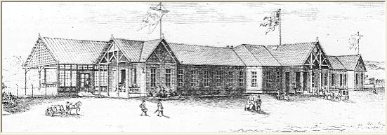
Stockholms stad hade erbjudit Lillienhoffska huset som stationsbyggnad. Detta hus hade sedan 1745använts som fattighus. Men Nils Ericson, som hade planer för en sammanbindningsbana, föredrog enprovisorisk träbyggnad på platsen för den igenfyllda Fatburssjön.Byggnaden var uppförd i schweizerstil och ritad av A.W. Edelswärd, järnvägens arkitekt framförandra.
|
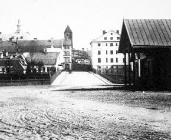 | Att stockholmarna var nöjda med den nya stationen och lättade över att Fatburssjön var bortaframgår tydligt. I "Stockholmska promenader" av Gustaf Thomée 1863 framhålls att Stockholmsbangård ligger på "den plats, der fordom Fatburssjön utbredde sin gröna, dyiga vattenspegel, från hvilkenförpestande ångor spriddes till hela den omgifvande trakten, men hvilken nu blifvit fylld och uttorkad."1865 beslöts att ett salutorg skulle anläggas nära stationen. Det fick senare namnet Södra Bantorget. En järnvägstunnel under Söder Många ansåg en sammanbindning mellan norra och västra stambanorna onödig och rentav farlig: "En sammanbindningsbana genom en utsprängd krokig, mörk och slipprig tunnel med en så ansenlig lutning, att ett ankommande lastadt tåg kan hejdas först då det avancerat öfver en svängbro, som tidt och ofta behöfver öppnas, är - jag dristar säga - i och för sig ett vågstycke,men en sådan anläggnings vådlighet tillväxer i en fruktansvärd grad vid betraktelse af beskaffenheten hos den sjötrafik som afskäres." |
|
Trots protesterna beslöt rikets ständer 1863 att västra stambanan skulle dras vidare till Klara sjöoch att en centralstation skulle anläggas. Man sprängde från båda hållen och möttes mitt i tunneln idecember 1865. Det var inte bara järnvägen som hade nytta av tunneln. Genom denna gick en avloppstrumma,som började vid Timmermansgatan och fortsatte till Stadsgården och Saltsjön. I Ny IllustreradTidning avslutas en artikel om tunnelbygget med följande ord: "Det är hennes skull, att Fatbursträsketicke längre förpestar en hel stadsdel; det är henne Stockholm har att tacka för ett renare dricksvatten, sedan allden orenlighet, som förut i 'Stadsdiket' hade sitt enda utlopp just i närheten af vattenledningsverket, nu genom jernbaneskärningen och tunneln kan rinna ut i den af en frisk strömsättning ständigt renade Saltsjön."
|
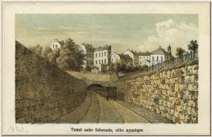
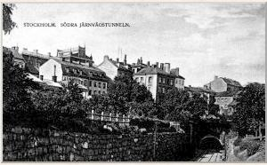 |
Och Fatburen? Ännu var sjön inte helt borta. Per Ludvig Lindgren har berättat om sina minnenfrån 1870-talets Söder. Lillienhoffska huset var fortfarande fattighus. Bakom huset, ner motstationen, fanns en liten rest av den trädgård som Joachim Pötter Lillienhoff anlade på 1600-talet.Lindgrens far brukade skjuta änder i Fatburen ännu i början av 1870-talet. I sjön fanns inte mycketfisk, bara små rudor. Det var en otäck stank i träsket, och man slängde fortfarande avskräde där.Flera kvarnar fanns i trakten, på Pelarbacken och runt sjön. "Väderkvarnen Fatburan revs, när Viktoriaångkvarn byggdes. De låg på samma ställe vid Fatburen nedanför Södra Bantorget ungefär där Konsum nu är. "
I trakten fanns på 1870-talet också en smedja, repslagarbana, tegelbruk, trädgårdar och mycketannat. "1872, -73, -74 och -75 åkte vi pojkar skridsko på Fatburn. När de skulle utvidga stationsområdet 1875,började de dika ut den fullständigt. Ända till -75 var det omkring 40 cm högt vatten på vårarna och så där omkring20 på höstarna. På sommaren var det dya."
1875 beslöt stadsfullmäktige att de sista resterna av Fatburen skulle fyllas igen i samband med attbangårdsområdet skulle utvidgas. Men Fatburen visade sig vara mycket svår att helt torrlägga. Många olika sätt att avledavattnet och att ersätta Stora stadsdiket, som började vid Södra Tullportsgatan (nuvarandeÖstgötagatan) och slutade i Årstaviken, föreslogs. 1877 anlades slutligen en trumma från Södrabantorget till järnvägstunnelns södra mynning.
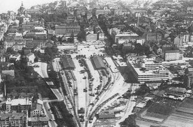  Södra stationsområdet på 1930-talet. Stationsbyggnaden är riven och Konsums numera k-märkta fabrik är färdig. Medborgarhuset är ännu inte byggt. Södra stationsområdet på 1930-talet. Stationsbyggnaden är riven och Konsums numera k-märkta fabrik är färdig. Medborgarhuset är ännu inte byggt. | Ny personstation 1926 byggdes en ny personstation längre västerut, vid Timmermansgatan. Den gamla stationen blevgodsstation, byggnaden revs 1929.I början av 1930-talet skulle man bygga Konsumhuset söder om Södra stationsområdet. Denkomplicerade grundläggningen väcker minnet av den mystiska traditionen om Fatburssjöns dubblabottnar. Det krävdes en mycket omfattande pålning för att få en fast grund.När Medborgarhuset byggdes i slutet av 1930-talet gjordes Södra bantorget om och fick namnet Medborgarplatsen.
En sista återstod av Fatburens gamla utlopp Stora stadsdiket, den så kallade Rännilen, fanns |